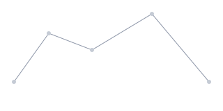

Field station 01 A sky in transit
Some moons
never stay.
Tonight, Iona crosses our sky.
A wandering world. A passing encounter.
The telescope is yours.
Arrival
Iona appears above the eastern ridge. The faint trail marks where this wandering moon has crossed our field of view.
Move through the moon’s passage with the arrow keys, or choose one of the three stages.
From the field notebook
Not every world
belongs to an orbit.
Iona is an imagined moon with somewhere else to be. This station exists for the brief moment our paths cross.
Stay a little. Look a little closer.
A world in motion
Follow the passage from the first sighting to the last trace. Iona grows closer, meets the reference line, then recedes into the western dark.
One moon. Three moments.
Your point of view
Drag the sky or change the telescope bearing. At alignment, center your view to bring Iona and the guide stars into a shared reference.
A small shift changes the sky.